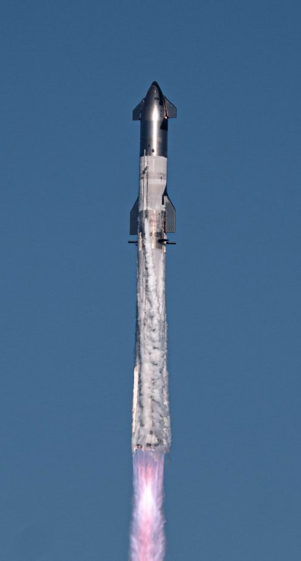
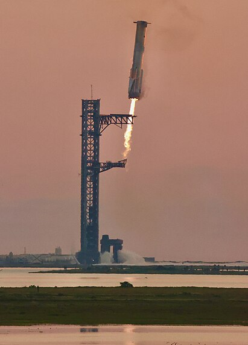

SpaceX Starship

Starship — разрабатываемая компанией SpaceX полностью
многоразовая ракета-носитель, предназначенная для экономичной
доставки грузов и людей на околоземные орбиты, а также для
межпланетных полётов на Луну и Марс. Самая массивная и мощная ракета
в мире на данный момент. Состоит из двух ступеней: Ускорителя
Super Heavy

Посадка Super Heavy в
клешнибашни-манипулятора
«Mechazilla»
и космического корабля
Starship
Прототип Starship SN20
на космодроме
.